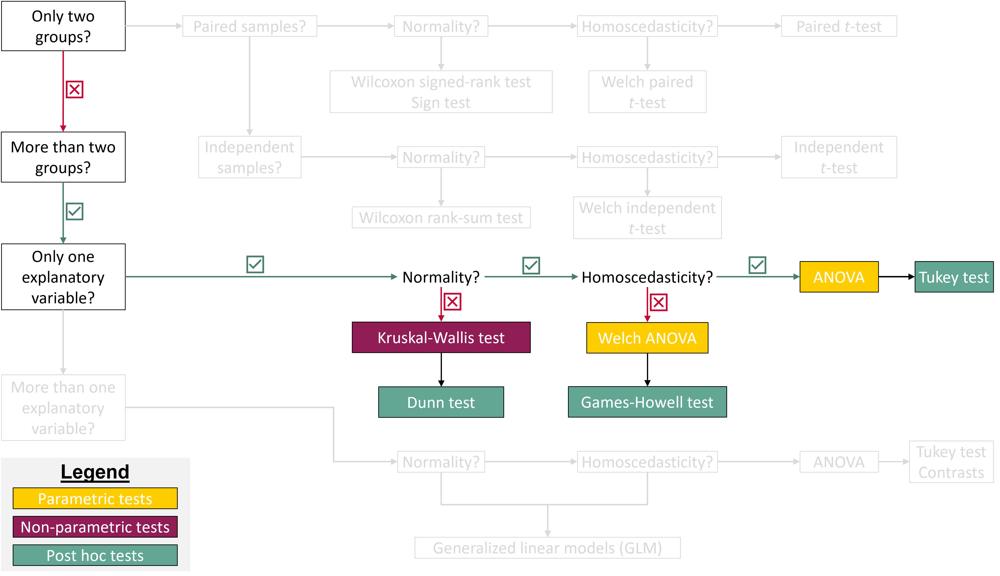
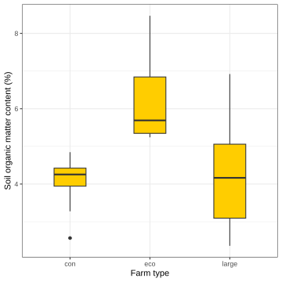
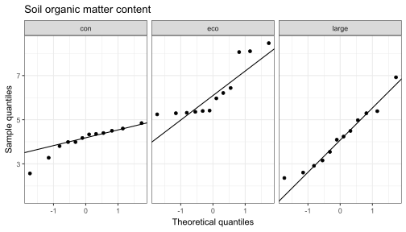
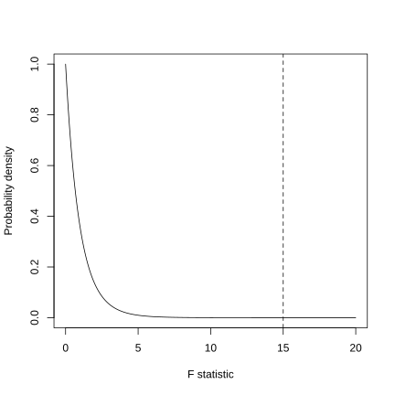
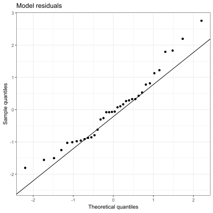
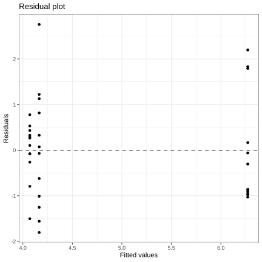
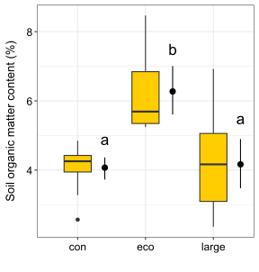

![]()
Show me the code
install.packages("dunn.test")
install.packages("rstatix")In this tutorial, you will learn how to perform and interpret Analysis of Variance (ANOVA) in R. The focus is on one-way ANOVA, using a single categorical variable as the explanatory (independent) variable. You will learn how to interpret key ANOVA outputs, including sums of squares, variance, degrees of freedom, the F-statistic, statistical significance, and effect size (η²). You will also compare the classical ANOVA with Welch’s ANOVA and learn when to use each approach, particularly when the assumption of homoscedasticity is violated. In addition, you will explore non-parametric alternatives for comparing multiple groups when the normality assumption is not met, specifically the Kruskal–Wallis test. Finally, you will learn how to perform post hoc tests to identify where differences between groups occur.
Let’s get started!

In this tutorial, we will need to use functions in the dunn.test and rstatix packages. Make sure to install these packages before starting the tutorial.
install.packages("dunn.test")
install.packages("rstatix")To work on this tutorial, you will need to load the readxl, tidyverse, dunn.test, and rstatix packages.
library(readxl)
library(tidyverse)
library(dunn.test)
library(rstatix)Start by importing the data used in this course (see previous tutorials).
#Option 1 (csv file)
data <- read_csv("gss_statistics_master_data_set2.csv")
#Option 2 (Excel file)
data <- read_excel("gss_statistics_master_data_set2.xlsx")We begin by formulating a research question to guide this tutorial. Soil organic matter is a key component of ecosystem functioning and the sustainability of farming systems. Accordingly, this tutorial addresses the following research question:
Is soil organic matter content different among agroecological, conventional, and large-scale farms?
The formulation of this question highlights an important feature of ANOVA when comparing multiple groups: it can only test undirected hypotheses. That is, ANOVA evaluates whether there are differences among group means, without specifying the direction of those differences (this is why a post hoc test is usually needed after an ANOVA).
Based on the research question above, formulate a null and an alternative hypothesis for the one-way ANOVA test.
Null hypothesis: there are no differences in soil organic matter content among farm types.
Alternative hypothesis: there are differences in soil organic matter content among farm types.
It is always a good idea to visualize data before doing any statistical test. Let’s create a box plot showing differences in soil organic matter content among farm types.
Create a box plot showing differences in soil organic matter content (SOM variable) among farm types.
ggplot(data = data, mapping = aes(x = farm_type, y = SOM)) +
geom_boxplot(width = 0.4,
fill = "#FFCD00")+ #Create a box plot
xlab("Farm type")+ #Change name of x axis
ylab("Soil organic matter content (%)")+ #Change name of y axis
theme_bw() #This creates a black/white plot
The assumptions of ANOVA are the same as those of an independent t-test: (1) the data should be normally distributed within each group (normality assumption), (2) the groups being compared should have equal variances (homoscedasticity assumption), and (3) the observations must be independent. Because soil organic matter content was measured on independent samples collected from different farms, the independence assumption can be considered satisfied.
We will first check the normality assumption using the Shapiro-Wilk’s test and Q-Q plots.
SOM), is normally distributed within each farm type (farm_type variable).#Filter data for each farm type
data_con <- dplyr::filter(data, farm_type == "con")
data_eco <- dplyr::filter(data, farm_type == "eco")
data_large <- dplyr::filter(data, farm_type == "large")
#Shapiro-Wilk's tests
shapiro.test(data_con$SOM)
Shapiro-Wilk normality test
data: data_con$SOM
W = 0.88605, p-value = 0.1048shapiro.test(data_eco$SOM)
Shapiro-Wilk normality test
data: data_eco$SOM
W = 0.77585, p-value = 0.005043shapiro.test(data_large$SOM)
Shapiro-Wilk normality test
data: data_large$SOM
W = 0.96065, p-value = 0.7931#Create Q-Q plot for soil organic matter content
ggplot(data, aes(sample = SOM)) +
stat_qq() +
stat_qq_line() +
facet_wrap(~ farm_type) +
theme_bw() +
xlab("Theoretical quantiles")+
ylab("Sample quantiles")+
ggtitle("Soil organic matter content")
The data from agroecological farms appear to deviate more from normality than those from the other two types of farms, as the p-value of the Shapiro-Wilk test for agroecological farms was the only one below the significance threshold (0.05), meaning that we must reject the null hypothesis that the data are normally distributed. This is confirmed by the Q-Q plots, which show a greater deviation from normality in agroecological farms.
We will check the homoscedasticity assumption using the Bartlett test.
SOM) has equal variances in the three types of farm (farm_type).#Test for soil organic matter content
bartlett.test(x = data$SOM,
g = data$farm_type)
Bartlett test of homogeneity of variances
data: data$SOM and data$farm_type
Bartlett's K-squared = 6.0262, df = 2, p-value = 0.04914The p-value of the test is slightly below the significance threshold (0.05), suggesting that the groups do not have equal variances. This is what we expected when we visualized the raw data using a box plot: the variance in soil organic matter content on conventional farms appeared to be lower than that on the other two types of farms. The result of Bartlett’s test confirms this impression.
Both exploratory analyses and formal statistical tests indicate that SOM data from agroecological farms do not follow a normal distribution, and that variability in SOM is lower in conventional farms. These results suggest that some key assumptions of ANOVA (normality and homoscedasticity) may not be fully met. Later in this tutorial, we will introduce non-parametric alternatives to ANOVA that may be more appropriate for such data.
That said, it is important to note that ANOVA is generally robust to moderate departures from normality and homoscedasticity. For this reason, we will proceed with ANOVA for now, and later compare its results with those from non-parametric tests. This comparison will allow us to assess whether different statistical approaches lead to the same conclusions.
The core idea of ANOVA is to partition the total variability in the data (measured as total sum of squares) into two components. The total sum of squares (\(SS_{total}\)) measures the overall variation in SOM around the grand mean (\(\bar{y}\), the mean value of SOM calculated across all farm types) (Equation 1). In Equation 1, \(k\) is the number of groups being compared (in our case: 3 farm types), \(n_i\) is the number of observations per group (in our case: 12 observations per farm), and \(y_{ij}\) is the jth value of soil organic matter content measured in group i.
\[ SS_{total} = \sum_{i=1}^k\sum_{j=1}^{n_i} (y_{ij} - \bar{y})^2 \tag{1}\]
This total variation is then split into two quantities:
\[ SS_{factor} = \sum_{i=1}^k\sum_{j=1}^{n_i} (\bar{y}_{i} - \bar{y})^2 = \sum_{i=1}^{k} n_i(\bar{y}_i - \bar{y})^2 \tag{2}\]
\[ SS_{res} = \sum_{i=1}^k\sum_{j=1}^{n_i} (y_{ij} - \bar{y}_i)^2 \tag{3}\]
Mathematically, this can be summarized using Equation 4.
\[ SS_{total} = SS_{factor} + SS_{res} \tag{4}\]
This is the first time we have used the term “residuals,” which is particularly important in statistics. Residuals are the differences between observed values and the values predicted by a statistical model. For each observation, a residual measures how far the model’s prediction is from the actual data point. Residuals therefore represent the unexplained variation in the response variable after accounting for the effects included in the model.
The results of an ANOVA are typically presented in an ANOVA table, which summarizes the analysis. The table includes, for each source of variation (factor and residual): the sum of squares, the associated degrees of freedom, the mean squares (variance calculated as the sum of squares divided by corresponding degrees of freedom), the F-statistic (ratio between factor and residual mean squares), and the corresponding p-value (Table 1).
| Sources of variation | Sum of squares | Degrees of freedom | Mean squares | F statistic |
|---|---|---|---|---|
| Factor | \(SS_{factor}\) | \(k-1\) | \(MS_{factor}=\frac{SS_{factor}}{k-1}\) | \(\frac{MS_{factor}}{MS_{res}}\) |
| Residuals | \(SS_{res}\) | \(\sum_{i=1}^k(n_i-1)\) | \(MS_{res}=\frac{SS_{res}}{\sum_{i=1}^k(n_i-1)}\) |
Use R to calculate all the statistical parameters needed to fill Table 1 in the case of our example (differences in soil organic matter content between farm types).
| Sources of variation | Sum of squares | Degrees of freedom | Mean squares | F statistic |
|---|---|---|---|---|
| Factor | Solution 1 | Solution 3 | Solution 5 | Solution 7 |
| Residuals | Solution 2 | Solution 4 | Solution 6 |
#Calculate number of observations in each farm
n_eco <- nrow(data_eco)
n_con <- nrow(data_con)
n_large <- nrow(data_large)
#Calculate factor sum of squares
SSfactor <- n_eco*(mean(data_eco$SOM)-mean(data$SOM))^2+n_con*(mean(data_con$SOM)-mean(data$SOM))^2+n_large*(mean(data_large$SOM)-mean(data$SOM))^2#Calculate residual sum of squares
SSresidual <- sum((data_eco$SOM-mean(data_eco$SOM))^2)+sum((data_con$SOM-mean(data_con$SOM))^2)+sum((data_large$SOM-mean(data_large$SOM))^2)#Calculate factor degrees of freedom
df_factor <- 3-1#Calculate residual degrees of freedom
df_residual <- (n_eco-1) + (n_con-1) + (n_large-1)#Calculate factor mean squares
MSfactor <- SSfactor/df_factor#Calculate residual mean squares
MSresidual <- SSresidual/df_residual#Calculate residual mean squares
F <- MSfactor/MSresidual| Sources of variation | Sum of squares | Degrees of freedom | Mean squares | F statistic |
|---|---|---|---|---|
| Factor | 37.18 | 2 | 18.59 | 15.002 |
| Residuals | 40.89 | 33 | 1.24 |
Under the null hypothesis (i.e., if there are no differences in soil organic matter content among farm types), we expect the F statistic to follow an F distribution with \(df1=k-1\) and \(df2=\sum_{i=1}^k(n_i-1)\) degrees of freedom (Figure 1).

We can now calculate the p-value associated with this test. Graphically, this corresponds to calculating the area under the distribution curve to the right of the dashed vertical line shown in Figure 1. This area represents the p-value and appears to be very small.
In R, this probability can be calculated using the function pf(), which takes four main arguments:
q: a vector of quantiles (in this example, it is the value of the observed F statistic)
df1: the number of degrees of freedom for the factor (\(k-1\))
df2: the number of degrees of freedom for the residuals (\(\sum_{i=1}^k(n_i-1)\))
lower.tail: a logical argument (can be either TRUE or FALSE). If set to TRUE, probabilities are \(P(X \le x)\). If set to FALSE, probabilities are \(P(X > x)\)
Calculate the p-value of the one-way ANOVA using pf(). What can you conclude from this test?
p <- pf(F, df1=df_factor, df2=df_residual, lower.tail=FALSE)The calculated p-value is 2.3227139^{-5}, which is much lower than the significance threshold (0.05). Therefore, we reject the null hypothesis that there are no differences in soil organic matter content among farm types.
Another interesting parameter to calculate is \(\eta^2\), which is the proportion of the total variation (\(SS_{total}\)) that is explained by the variation of the independent (or explanatory) variable (\(SS_{factor}\)) (Equation 5). An adjusted \(\eta^2\) can also be calculated using Equation 6, where \(k\) is the number of groups being compared, \(F\) is the value of the F statistic, and \(N\) is the total number of observations.
\[ \eta^2=\frac{SS_{factor}}{SS_{total}}=\frac{SS_{factor}}{SS_{factor}+SS_{res}} \tag{5}\]
\[ adjusted\quad\eta^2=\frac{(k-1)(F-1)}{(k-1)(F-1)+N} \tag{6}\]
Calculate the percentage of the total variation in soil organic matter content that is explained by farm type (\(\eta^2\)).
eta2 <- 100*SSfactor/(SSfactor+SSresidual)47.6% of the total variation in soil organic matter content is explained by differences in farm type.
In R, a one-way ANOVA can be fitted using the aov() function. Make sure your response variable (SOM) is numeric and your grouping variable (farm_type) is a factor. You can make sure of that using the functions as.numeric() and as.factor().
The aov() function has two main arguments:
formula: a formula specifying the model. The formula must have the following form: response ~ factor.
data: a data frame in which the variables specified in the formula will be found.
aov() function. Use soil organic matter content (SOM) as the response variable, and farm type (farm_type) as the independent variable (factor). Store the model in an object called model.summary() function on the model object to see the ANOVA table.#Make sure that farm type is a factor
data$farm_type <- as.factor(data$farm_type)
#Fit ANOVA model
model <- aov(SOM ~ farm_type,
data = data)summary(model) Df Sum Sq Mean Sq F value Pr(>F)
farm_type 2 37.18 18.589 15 2.32e-05 ***
Residuals 33 40.89 1.239
---
Signif. codes: 0 '***' 0.001 '**' 0.01 '*' 0.05 '.' 0.1 ' ' 1The calculated p-value is much lower than the significance threshold (0.05). Therefore, we reject the null hypothesis that there are no differences in soil organic matter content among farm types.
After fitting an ANOVA model, you can check whether the normality assumption is met by examining whether the model residuals are approximately normally distributed. This can be done by (1) using the residuals() function on the ANOVA model object to extract the model residuals (i.e. the differences between observed values and model predictions), (2) applying a Shapiro-Wilk test to the residuals, and (3) creating a Q-Q plot using model residuals. This time, there is no need to run a separate test or create a separate Q-Q plot for each farm type.
residuals() function on the model object. Store these residuals in a new column (SOM_residuals) in the data object.data$SOM_residuals <- residuals(model)shapiro.test(data$SOM_residuals)
Shapiro-Wilk normality test
data: data$SOM_residuals
W = 0.96004, p-value = 0.2156ggplot(data, aes(sample = SOM_residuals)) +
stat_qq() +
stat_qq_line() +
theme_bw() +
xlab("Theoretical quantiles")+
ylab("Sample quantiles")+
ggtitle("Model residuals")
The p-value of the Shapiro-Wilk test is greater than the significance threshold (0.05). Therefore, we fail to reject the null hypothesis that the model residuals are normally distributed. This result is supported by the Q-Q plot, in which most points lie close to the reference line. Although the raw data for one farm type did not appear to follow a normal distribution (see above), the residuals of the fitted model do, indicating that the normality assumption is reasonably met. This suggests that a one-way ANOVA was an appropriate choice for comparing soil organic matter content among farm types.
After fitting an ANOVA model, you can check the homoscedasticity assumption by creating a residual plot.
A residual plot shows the model residuals plotted against the fitted values. A residual is the difference between an observed value and the value predicted by the model. In a one-way ANOVA, the model assumes that all observations within the same group can be represented by that group’s mean, so it predicts the same value for every observation in a group. Residuals are therefore calculated as the observed value minus the group mean. In our soil organic matter (SOM) example, the residual for a measurement from an agroecological farm is the difference between that measurement and the average SOM measured across all agroecological farms. The fitted value is simply the value predicted by the model for that observation. In a one-way ANOVA, this predicted value is the mean of the group to which the observation belongs. This means that all observations from the same farm type have the same fitted value. Each point in the residual plot represents one observation. Its horizontal position shows the fitted value (the group mean for its farm type), while its vertical position shows the residual, indicating how far that observation lies above or below its group’s average.
Residual plots are used to assess the assumption of homoscedasticity, which means that the variance of the residuals is constant across the range of fitted values. If this assumption is met, the residuals should be randomly scattered around zero with no clear pattern and a roughly constant spread. In contrast, patterns such as a funnel shape (increasing or decreasing spread) would indicate heteroscedasticity, suggesting that the assumption of equal variances may be violated.
To create a residual plot, we first need to extract model residuals (residuals()) and fitted values (fitted()). We already extracted the model residuals earlier (SOM_residuals column).
fitted() function on the model object. Store these values in a new column (SOM_fitted) in the data object.data$SOM_fitted <- fitted(model)ggplot(data, aes(x = SOM_fitted,
y = SOM_residuals)) +
geom_point() + #Add points to the plot
geom_hline(yintercept = 0,
linetype = "dashed")+ #Add horizontal dashed line at y=0
theme_bw() +
xlab("Fitted values")+
ylab("Residuals")+
ggtitle("Residual plot")
The residuals are well scattered around zero. Although a few observations have relatively large residuals, there is no clear systematic pattern, such as a funnel shape, that would indicate heteroscedasticity. This suggests that the assumption of homoscedasticity is reasonably met.
Based on the ANOVA table, we concluded that soil organic matter content differed among farm types, indicating that at least one farm type has a mean soil organic matter content that is different from the others. However, the ANOVA results do not indicate which farm types differ from each other (just that differences exist). To identify these pairwise differences, a post hoc test is required.
A commonly used option is Tukey’s Honest Significant Difference (Tukey HSD) test. In R, this test can be performed using the TukeyHSD() function from the stats package.
The TukeyHSD() function has three main arguments:
x: an ANOVA model object fitted with aov()
which: the name(s) of the factor(s) for which pairwise comparisons should be performed
conf.level: the confidence level to use (0.95 by default)
Post hoc test results are often shown graphically by placing letters above each group. Groups that share one or more letters do not differ significantly from each other, whereas groups that do not share any letters are significantly different.
TukeyHSD(x = model,
which = "farm_type") Tukey multiple comparisons of means
95% family-wise confidence level
Fit: aov(formula = SOM ~ farm_type, data = data)
$farm_type
diff lwr upr p adj
eco-con 2.201667 1.086552 3.3167813 0.0000846
large-con 0.095000 -1.020115 1.2101146 0.9762141
large-eco -2.106667 -3.221781 -0.9915521 0.0001556We found that soil organic matter content differed among farm types (ANOVA: F(2, 33) = 15.02, p < 0.001). According to the Tukey post hoc test, agroecological farms have a higher soil organic matter content than conventional (p < 0.001) and large-scale farms (p < 0.001). No significant differences could be detected between conventional and large-scale farms (p = 0.976).

If the normality assumption is not met, one alternative is to use the Kruskal-Wallis test to compare multiple groups. Like most non-parametric tests, the Kruskal-Wallis test is based on ranks rather than the raw data. Specifically, all observations are converted to ranks across the entire dataset, and the test evaluates whether the distributions of ranks differ among groups.
In R, you can run a Kruskal-Wallis test using the kruskal.test() function from the stats package. The R syntax to use this function is very similar to that of a one-way ANOVA (aov()). The test will return a test statistic (Kruskal-Wallis chi-squared) and a p-value.
SOM) differs among farm types (farm_type) using a Kruskal-Wallis test.kruskal.test(SOM ~ farm_type,
data = data)
Kruskal-Wallis rank sum test
data: SOM by farm_type
Kruskal-Wallis chi-squared = 18.993, df = 2, p-value = 7.513e-05We found that soil organic matter content differed among farm types (Kruskal-Wallis chi-squared: 18.99, p < 0.001).
When a Kruskal-Wallis test indicates significant differences among groups, a post hoc test such as Dunn’s test can be used to identify which groups differ from each other. Because multiple pairwise comparisons are performed, p-values are typically adjusted (e.g. using Bonferroni correction) to control for the increased risk of Type I error.
In R, a Dunn post hoc test can be done using the dunn.test() function in the dunn.test package. There are three main arguments to consider:
x: a numeric vector containing values of your response variable of interest (SOM in our case)
g: a factor or character vector indicating the groups (farm_type in our case)
method: the method used to adjust p-values for multiple comparisons (use Bonferroni in this tutorial)
dunn.test(x = data$SOM,
g = data$farm_type,
method = "bonferroni")We found that soil organic matter content differed among farm types (Kruskal-Wallis: chi-squared = 18.99, p < 0.001). According to Dunn’s post hoc test, agroecological farms have a higher soil organic matter content than conventional (p = 0.0001) and large-scale farms (p = 0.0005). No significant differences could be detected between conventional and large-scale farms (p = 1.0).
If the assumption of equal variances is violated, Welch’s ANOVA can be used as an alternative to the traditional ANOVA.
In R, a Welch’s ANOVA can be done using the oneway.test() function from the stats package. This function has three main arguments to consider in this tutorial:
formula: a formula specifying the model. The formula must have the following form: response ~ factor.
data: a data frame in which the variables specified in the formula will be found.
var.equal: a logical variable indicating whether to treat the variances in the samples as equal (TRUE for yes, FALSE for no). Welch’s ANOVA is used when var.equal=FALSE.
SOM) differs among farm types (farm_type) using a Welch’s ANOVA (use var.equal=FALSE)oneway.test(SOM ~ farm_type,
data = data,
var.equal = FALSE)
One-way analysis of means (not assuming equal variances)
data: SOM and farm_type
F = 15.011, num df = 2.0, denom df = 19.4, p-value = 0.000115We found that soil organic matter content differed among farm types (Welch’s ANOVA: F(2, 19.4) = 15.01, p < 0.001).
If Welch’s ANOVA is used because the assumption of equal variances is not met, a different post hoc test is also required. An appropriate choice is the Games-Howell test.
In R, this test can be performed using the games_howell_test() function from the rstatix package. This function has three main arguments:
formula: a formula specifying the model. The formula must have the following form: response ~ factor.
data: a data frame in which the variables specified in the formula will be found.
conf.level: the confidence level to use (0.95 by default)
games_howell_test(SOM ~ farm_type,
data = data)# A tibble: 3 × 8
.y. group1 group2 estimate conf.low conf.high p.adj p.adj.signif
* <chr> <chr> <chr> <dbl> <dbl> <dbl> <dbl> <chr>
1 SOM con eco 2.20 1.17 3.23 0.000125 ***
2 SOM con large 0.0950 -1.01 1.20 0.973 ns
3 SOM eco large -2.11 -3.43 -0.784 0.002 ** We found that soil organic matter content differed among farm types (Welch’s ANOVA: F(2, 19.4) = 15.01, p < 0.001). According to Games-Howell’s post hoc test, agroecological farms have a higher soil organic matter content than conventional (p < 0.001) and large-scale farms (p = 0.002). No significant differences could be detected between conventional and large-scale farms (p = 0.973).
Feel free to explore differences among farm types using other response variables available in the dataset. For example, which statistical tests would be most appropriate to assess differences in the number of agroecological practices (n_practices), Shannon diversity (shannon_PIM), and mowing intensity (mowing) among farm types? Justify your choice of tests based on the data and their assumptions, and clearly state the conclusions drawn from each analysis.